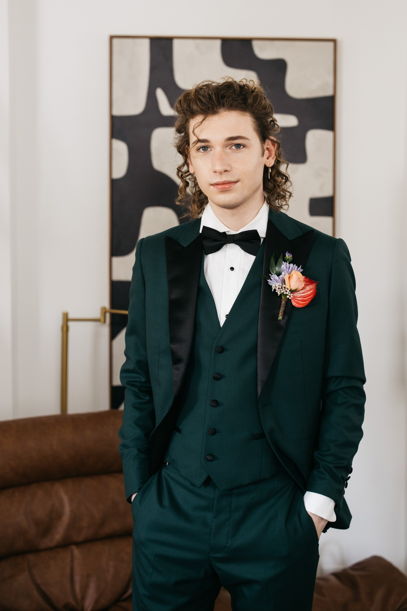

01Ongoing
Who responds to DMT-assisted therapy?
Why do some people with alcohol use disorder benefit more? Inflammatory and neuroplasticity markers from a Yale trial, and a birth-cohort analysis.
About this project →Fulbright PhD researcher · RCSI University of Medicine and Health Sciences · Dublin
Studying how psychedelic therapy, built on good evidence, could change mental health care for everyone.
I am a Fulbright PhD student at the Royal College of Surgeons in Ireland, a research assistant at the Yale School of Medicine ABN Lab and co-founder of The Psyche. My projects range from literature reviews to biomarker analysis.

Three questions I keep coming back to.
Why do some people with alcohol use disorder benefit more? Inflammatory and neuroplasticity markers from a Yale trial, and a birth-cohort analysis.
About this project →Can immersive environments shape set and setting, or reproduce parts of the experience without a drug?
About this project →Scoping reviews that map what we actually know about psychedelic-assisted and immersive interventions.
About this project →Systematic review and meta-analysis of long-term remission rates after classic psychedelic treatment.
All projects →For teams, clinics and funders
Rigorous evidence, explained plainly. I take on a small number of projects each year.
Rapid, scoping and systematic reviews to PRISMA standard, for clinics, start-ups and policy teams.
Psychedelic science and immersive health tech for general, clinical and industry audiences.
Study design, search strategy and critical appraisal for teams entering the field.
Cellular and molecular neuroscience research, and a team of five undergraduate research assistants.
Drug development in a GMP laboratory, then a move toward psychedelic science.
Anal cancer prevention research in the CHEER Lab, and from 2025 research at the Yale ABN Lab.
Psychiatric neuroscience and epidemiology in Dublin, on psychedelics and trauma.
Collaboration, consulting, a talk, or a question about a paper. I reply within a week.
Message me
Email is quickest; a direct message works too.